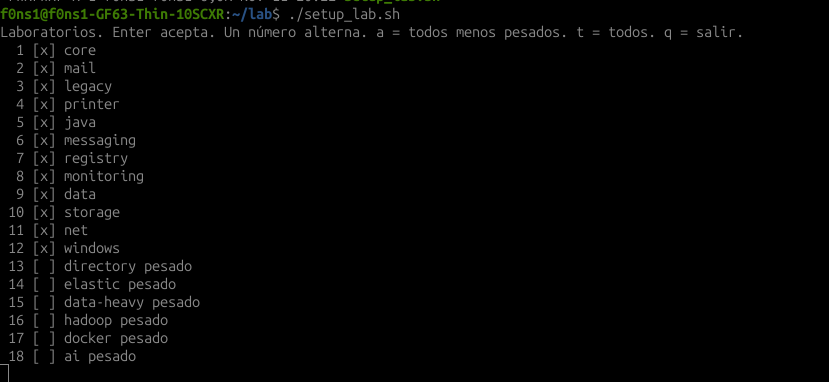
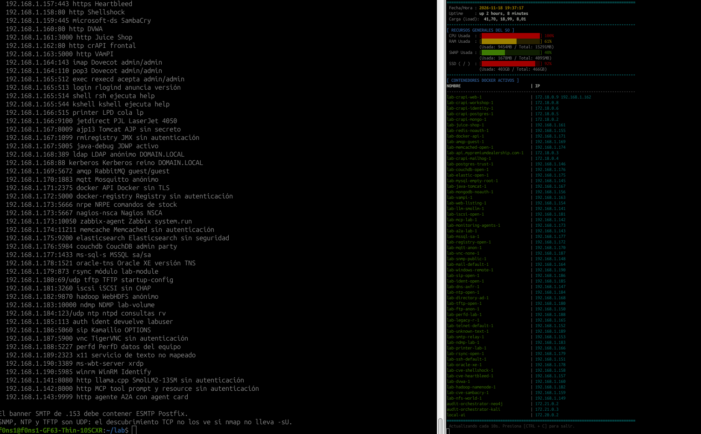

crapi-postgres y crapi-mongo: las bases que hay detrás del frontal.
Fase 4
Laboratorios y ejecuciones.
El laboratorio son los servidores de la derecha de la arquitectura. Cada contenedor es una caja negra, con su IP. Kali los audita por la ipvlan. El portátil no publica sus puertos.
Ejecuciones
Están al final de esta página. Desde aquí se llega a cada una. El tipo 1 y el tipo 2 llevan el vídeo.
01
Tipo 1
Vídeo del grafo, sin modelo.
02
Tipo 2
Vídeo de la revisión al cerrar el host.
03
Tipo 3
El modelo entra en cada servicio.
Los grupos

El laboratorio en marcha

Qué expone cada contenedor
Una fila es un servicio a la escucha. La última columna es el fallo plantado: lo que una auditoría de este laboratorio puede confirmar. Primero van los grupos normales. Los pesados lo dicen en el título.
Núcleo
Es el grupo que Enter deja marcado. Una IP por fallo: bases sin clave, ficheros abiertos, tres CVE antiguos y cuatro webs de práctica.
| Contenedor | Dirección | Servicio | Qué queda expuesto |
|---|---|---|---|
| mysql-empty-root | 192.168.1.145:3306 | MySQL | root sin clave |
| postgres-trust | 192.168.1.146:5432 | PostgreSQL | autenticación trust |
| dns-axfr | 192.168.1.147:53 | DNS | AXFR de la zona lab.local |
| snmp-public | 192.168.1.148:161/udp | SNMP | comunidad public, solo lectura |
| nfs-world | 192.168.1.149:2049 | NFS | export /exports abierto a cualquiera |
| ftp-anon | 192.168.1.150:21 | FTP | anónimo, solo lectura |
| ssh-default | 192.168.1.151:22 | SSH | clave de laboratorio root/root |
| telnet-default | 192.168.1.152:23 | Telnet | clave de laboratorio admin/admin |
| smtp-relay | 192.168.1.153:25 | SMTP | open relay, banner ESMTP Postfix |
| web-listing | 192.168.1.154:80 | HTTP | Apache 2.4 con listado de directorio |
| redis-noauth | 192.168.1.155:6379 | Redis | acepta comandos sin clave |
| mongodb-noauth | 192.168.1.156:27017 | MongoDB | sin autenticación |
| cve-heartbleed | 192.168.1.157:443 | TLS | Heartbleed, CVE-2014-0160 |
| cve-shellshock | 192.168.1.158:80 | HTTP | Shellshock en /victim.cgi, CVE-2014-6271 |
| cve-sambacry | 192.168.1.159:445 | SMB | SambaCry, CVE-2017-7494 |
| dvwa | 192.168.1.160:80 | HTTP | DVWA: la página y el formulario de login |
| juice-shop | 192.168.1.161:3000 | HTTP | Juice Shop identificado en el puerto 3000 |
| crapi-web | 192.168.1.162:80 | HTTP | frontal de crAPI. El resto va por detrás |
| vampi | 192.168.1.163:5000 | HTTP | VAmPI con OpenAPI público |
Correo
Un solo contenedor, Dovecot, con el buzón en IMAP y en POP3.
| Contenedor | Dirección | Servicio | Qué queda expuesto |
|---|---|---|---|
| mail-default | 192.168.1.164:143 | IMAP | admin/admin entra y ve INBOX |
| mail-default | 192.168.1.164:110 | POP3 | admin/admin entra y hay un mensaje |
Servicios r
Un contenedor con los cuatro puertos antiguos: rexec, rlogin, rsh y kshell.
| Contenedor | Dirección | Servicio | Qué queda expuesto |
|---|---|---|---|
| legacy-r | 192.168.1.165:512 | rexec | anuncia rexecd 1.0 |
| legacy-r | 192.168.1.165:513 | rlogin | anuncia rlogind 1.0 |
| legacy-r | 192.168.1.165:514 | rsh | ejecuta help y devuelve GNU bash |
| legacy-r | 192.168.1.165:544 | kshell | el puerto 544 hace lo mismo |
Impresión
La cola LPD y el puerto de impresión PJL en la misma IP.
| Contenedor | Dirección | Servicio | Qué queda expuesto |
|---|---|---|---|
| printer-lab | 192.168.1.166:515 | LPD | la cola lp responde el estado |
| printer-lab | 192.168.1.166:9100 | PJL | devuelve el modelo LaserJet 4050 |
Java
Tomcat con el conector AJP, el registro JMX y el depurador JDWP.
| Contenedor | Dirección | Servicio | Qué queda expuesto |
|---|---|---|---|
| java-tomcat | 192.168.1.167:8009 | AJP | conector AJP sin secreto |
| java-tomcat | 192.168.1.167:1099 | JMX | registro RMI sin autenticación |
| java-tomcat | 192.168.1.167:5005 | JDWP | el depurador contesta el handshake |
Mensajería
Dos brokers. RabbitMQ en .169 y Mosquitto en .170.
| Contenedor | Dirección | Servicio | Qué queda expuesto |
|---|---|---|---|
| amqp-guest | 192.168.1.169:5672 | AMQP | RabbitMQ acepta guest/guest |
| mqtt-anon | 192.168.1.170:1883 | MQTT | Mosquitto deja leer $SYS sin clave |
Registro de imágenes
Un registry Docker que enseña el catálogo sin pedir clave.
| Contenedor | Dirección | Servicio | Qué queda expuesto |
|---|---|---|---|
| registry-open | 192.168.1.172:5000 | Registry | el catálogo lista lab-image sin clave |
Monitorización
NRPE, NSCA y el agente de Zabbix comparten la IP .173.
| Contenedor | Dirección | Servicio | Qué queda expuesto |
|---|---|---|---|
| monitoring-agents | 192.168.1.173:5666 | NRPE | check_load responde |
| monitoring-agents | 192.168.1.173:5667 | NSCA | Nagios NSCA a la escucha |
| monitoring-agents | 192.168.1.173:10050 | Zabbix | system.run devuelve el usuario |
Datos ligeros
Memcached en .174 y CouchDB en .176. Elasticsearch ocupa la IP de en medio y va en su propio grupo.
| Contenedor | Dirección | Servicio | Qué queda expuesto |
|---|---|---|---|
| memcached-open | 192.168.1.174:11211 | Memcached | stats sin clave |
| couchdb-open | 192.168.1.176:5984 | CouchDB | lista labdb sin clave |
Almacenamiento
rsync, TFTP, iSCSI y NDMP. TFTP es UDP: un barrido solo TCP no lo ve.
| Contenedor | Dirección | Servicio | Qué queda expuesto |
|---|---|---|---|
| rsync-open | 192.168.1.179:873 | rsync | lista el módulo lab-module |
| tftp-open | 192.168.1.180:69/udp | TFTP | entrega startup-config |
| iscsi-open | 192.168.1.181:3260 | iSCSI | responde el IQN sin CHAP |
| ndmp-lab | 192.168.1.183:10000 | NDMP | describe el volumen lab-volume |
Red
NTP, ident, SIP, VNC, un servicio de rendimiento y un puerto de texto que el catálogo no tiene mapeado. NTP es UDP.
| Contenedor | Dirección | Servicio | Qué queda expuesto |
|---|---|---|---|
| ntp-open | 192.168.1.184:123/udp | NTP | responde rv y un stratum |
| ident-open | 192.168.1.185:113 | ident | devuelve el usuario labuser |
| sip-open | 192.168.1.186:5060 | SIP | contesta OPTIONS |
| vnc-none | 192.168.1.187:5900 | VNC | TigerVNC sin autenticación |
| perfd-lab | 192.168.1.188:5227 | PerfD | contesta los verbos de lectura |
| unknown-text | 192.168.1.189:2323 | texto | servicio no mapeado: responde uname y whoami |
Escritorio remoto
xrdp y WinRM en la última IP del rango, .190.
| Contenedor | Dirección | Servicio | Qué queda expuesto |
|---|---|---|---|
| windows-remote | 192.168.1.190:3389 | RDP | xrdp negocia y anuncia el equipo |
| windows-remote | 192.168.1.190:5985 | WinRM | /wsman devuelve Identify |
Directorio · pesado
Samba AD. Sale desmarcado. LDAP anónimo y el reino Kerberos DOMAIN.LOCAL.
| Contenedor | Dirección | Servicio | Qué queda expuesto |
|---|---|---|---|
| directory-ad | 192.168.1.168:389 | LDAP | bind anónimo sobre DC=domain,DC=local |
| directory-ad | 192.168.1.168:88 | Kerberos | el reino anunciado es DOMAIN.LOCAL |
Elasticsearch · pesado
Un nodo sin seguridad, en .175. El host necesita vm.max_map_count alto. El script lo recuerda al levantarlo.
| Contenedor | Dirección | Servicio | Qué queda expuesto |
|---|---|---|---|
| elastic-open | 192.168.1.175:9200 | Elasticsearch | el índice lab-index se lee sin clave |
Datos pesados
MSSQL y Oracle XE. Salen desmarcados porque tardan en arrancar.
| Contenedor | Dirección | Servicio | Qué queda expuesto |
|---|---|---|---|
| mssql-sa | 192.168.1.177:1433 | MSSQL | acepta sa/sa tras el arranque |
| oracle-xe | 192.168.1.178:1521 | Oracle | anuncia la versión TNS |
Hadoop · pesado
El NameNode publica WebHDFS anónimo en .182.
| Contenedor | Dirección | Servicio | Qué queda expuesto |
|---|---|---|---|
| hadoop-namenode | 192.168.1.182:9870 | WebHDFS | LISTSTATUS anónimo |
API Docker · pesado
La API del demonio en claro, en el puerto 2375, sin TLS.
| Contenedor | Dirección | Servicio | Qué queda expuesto |
|---|---|---|---|
| docker-api | 192.168.1.171:2375 | Docker | /version responde sin TLS |
IA · pesado
Tres cajas fuera del bloque .145–.190: un modelo pequeño, un MCP y un agente A2A. Las tres atienden sin clave.
| Contenedor | Dirección | Servicio | Qué queda expuesto |
|---|---|---|---|
| llm-smollm | 192.168.1.141:8080 | HTTP | llama.cpp lista smollm2-135m-lab sin clave |
| mcp-lab | 192.168.1.142:8000 | HTTP | MCP: tools/list sin clave |
| a2a-lab | 192.168.1.143:9999 | HTTP | tarjeta A2A con la skill lab-inventory |
Contenedores que no son un servidor de la LAN
Arrancan con el grupo core porque crAPI los necesita. No salen en el inventario de IPs. Desde la red del laboratorio no tienen dirección.
crapi-mailhog: el correo interno. Solo cuenta si el frontal apunta a él.
crapi-identity, crapi-community y crapi-workshop: se juzgan por las rutas de .162.
El gateway, api.mypremiumdealership.com: se queda en crapi_internal.
Configurar
Arranque de los laboratorios. El script setup_lab.sh está en el repositorio de black-ops, en lab/setup_lab.sh. Pregunta qué grupos levantar, asegura la red ipvlan y arranca solo esos perfiles.
Monitorizar
Monitorizar el entorno
Monitorización del uso del laboratorio. Mira los recursos de la máquina y los contenedores Docker en ejecución.
Ejecución inicial
Cada llamada deja un workspace, con un FIND-*.md por hallazgo guardado. La fase 5 compara ese workspace con el oráculo.
Tipo 1
Recorre el grafo de cada puerto en Kali. No llama al modelo.
audit_v2_start_and_run(
base_path="<WORKSPACE>",
execution_mode="type_1_no_llm",
audit_profile="fast",
nmap_file="open_ports.txt",
reset=true,
max_servers=10,
max_services=3,
max_kali_jobs=10
)https://www.youtube.com/watch?v=o0hzP2ID37M&t=2s
El vídeo de esta fase se añadirá aquí.
Tipo 2
Hace el tipo 1. Cuando terminan los puertos de un host, el modelo revisa ese host.
audit_v2_start_and_run(
base_path="<WORKSPACE>",
execution_mode="type_2_post_host_llm",
audit_profile="deep",
nmap_file="open_ports.txt",
reset=true,
max_servers=10,
max_services=3,
max_kali_jobs=10,
llm_model="<MODEL_ID>"
)https://www.youtube.com/watch?v=YZfLlv5Ei_Q&t=2s
El vídeo de esta fase se añadirá aquí.
Tipo 3
Hace el tipo 1. Tras cada servicio el modelo puede devolver un comando. Al cerrar el host hace la misma revisión que el tipo 2.
audit_v2_start_and_run(
base_path="<WORKSPACE>",
execution_mode="type_3_interactive_llm",
audit_profile="balanced",
nmap_file="open_ports.txt",
reset=true,
max_servers=5,
max_services=5,
max_kali_jobs=8,
llm_model="<MODEL_ID>"
)